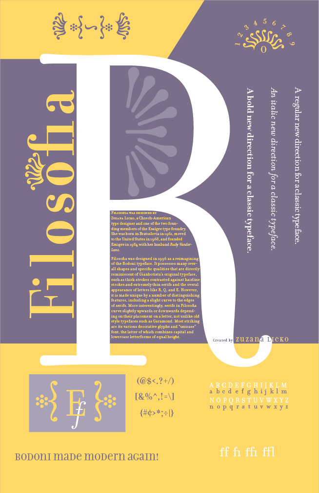
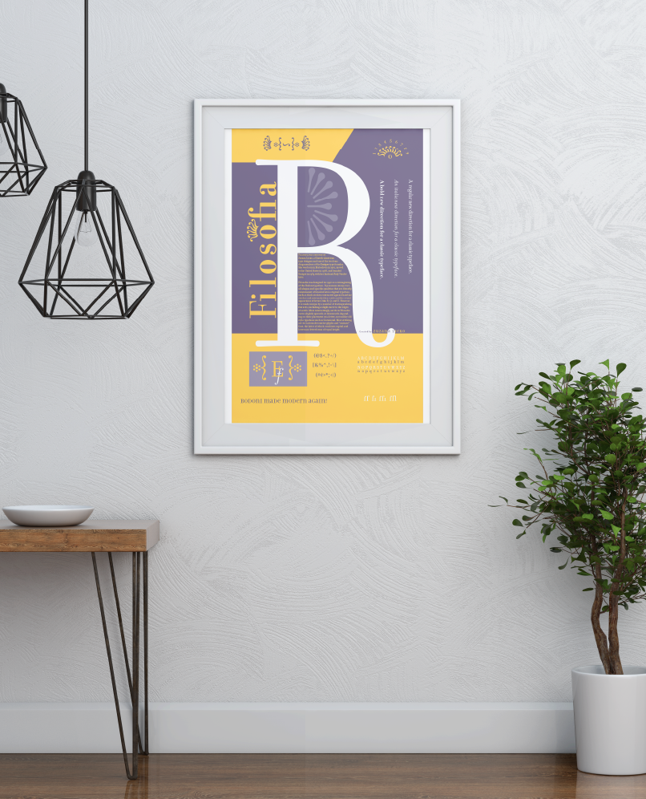

11" x 17", Typography I
A poster meant to show off the qualities of the typeface Filosophia, containing various characters and a history of the typeface itself.
The focus of this project was composition. I was limited to only three colors, with tints being the only variation I could apply in that framework. I had to research both the typeface and its creator (Emigre founder Zuzana Licko), write a paragraph detailing what I learned from that research, and then put it all together into a poster that both showed off the typeface’s characteristics and, of course, looks good.
Created in InDesign.
